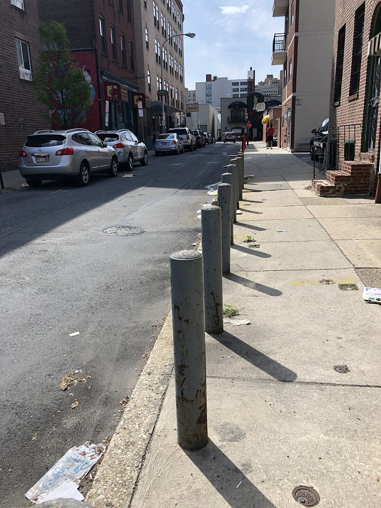
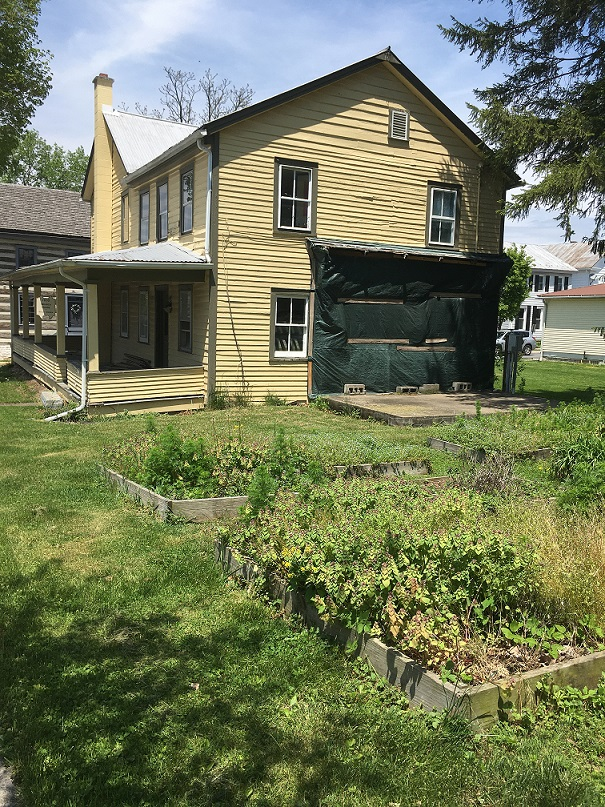

I see trash on the street, which I would love to see removed. We also only have one tree.
I like that there is parking and that there are barriers to prevent cars from parking on the side walk.
I love that it's a small quieter street right in the middle of center city.

This abandoned house on my block is owned by the historical society. I heard there were plans to turn
it into a cafe, but that didn't happen. I think that would be a good idea. They could use the raised beds
in the back to grow food to use in the cafe and maybe offer a small community garden too.